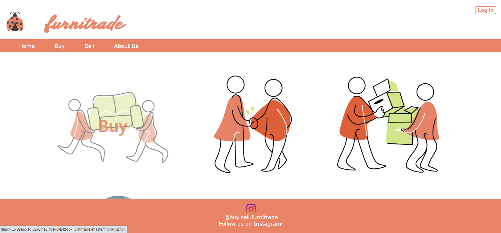
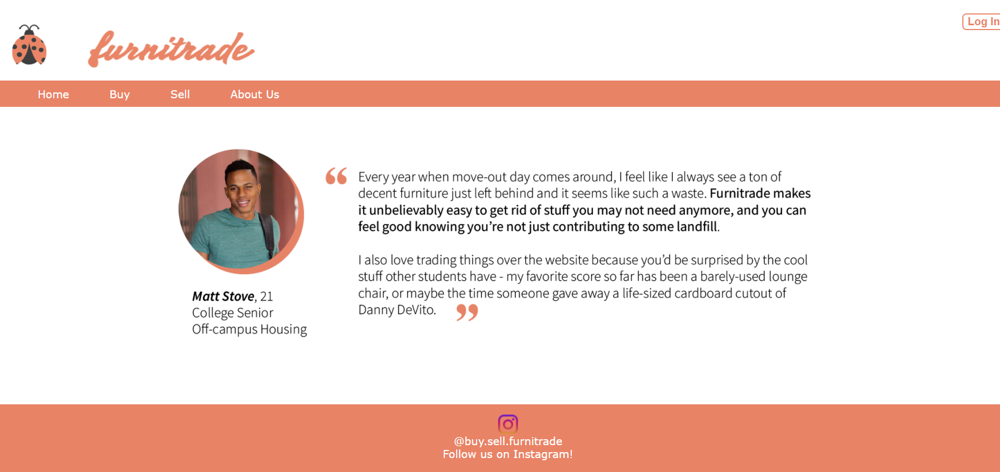

Furnitrade
 As college students ourselves and people who have experienced the stressful and often wasteful process of moving, this application provides a solution: a quick and easy one-stop app to trade, sell, buy, or donate furniture. Especially in our current sociological state, being conscious about our waste is a necessary act. Trash in landfills significantly contributes to global warming by releasing methane gas, and each year, nine million tons of furniture end up in landfills. Our application seeks to not only provide the everyday person with the ease of buying and selling furniture, but to also make a statement on topics such as consumerism and throwaway culture, and how they negatively impact both our environment and our wallets. Right now, the only option people have to sell or buy furniture is through Craigslist, Ebay, or Facebook Marketplace. However, all of these sites are a hassle because they are time consuming, and not specifically focused on quick turnover furniture. The Furnitrade application will be quick, easy, and reliable for young college students who don’t have time to worry about moving.